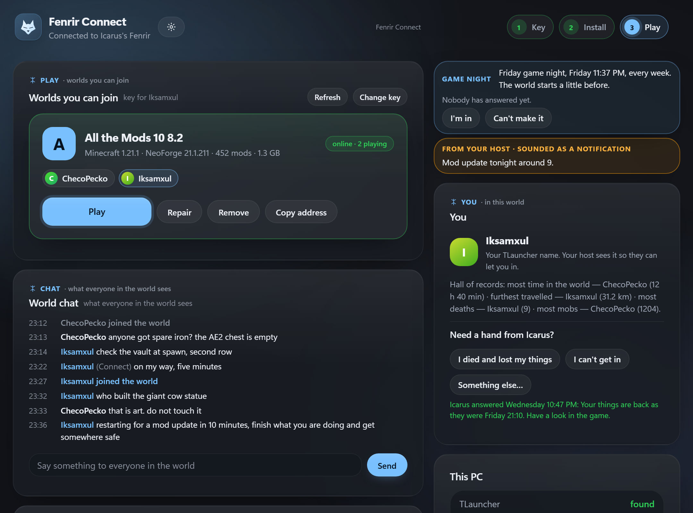
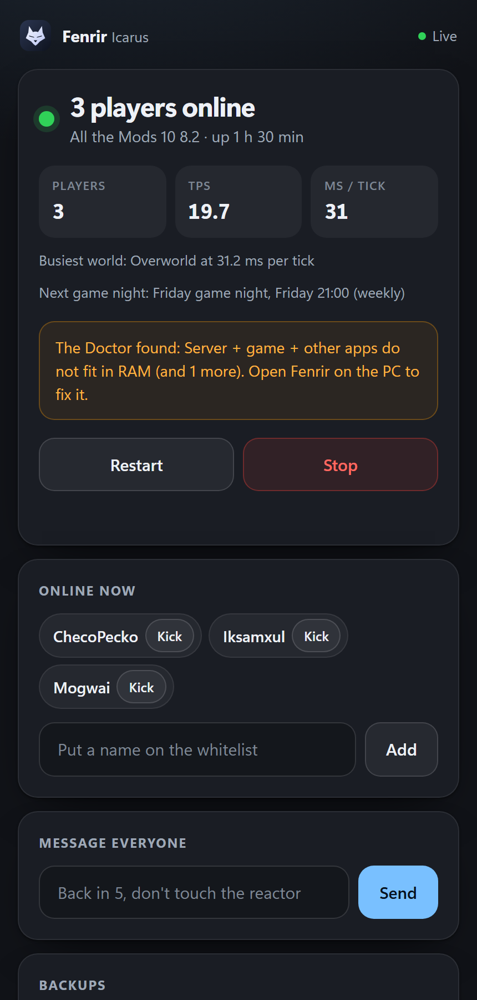

Modded Minecraft, hosted at home
Host your world. Send one link.
Fenrir turns one Windows PC into a modded Minecraft server your friends can join from anywhere. It sets up the pack, keeps the world backed up and gives every friend a link that installs everything.

How it fits together
One PC. Everyone’s world.
The server runs on your PC, and a free tunnel gives it an address your friends can reach from anywhere. Each friend gets a link of their own, so you always know who is in.
- No router changes
- A key per friend
- NeoForge, Forge, Fabric or Quilt
One link
You do two things. They press Play.
-
You
Install the pack.
Pick the pack’s server files, or find one on Modrinth or CurseForge from inside Fenrir. The Doctor installs the right Java. Press Start and accept the EULA once.
Server pack · what your world runs
Install a pack
ServerFiles-8.2.zipAll the Mods 10 · NeoForge 21.1.251 · 464 modsInstalled- Java 21, installed by the Doctor
- EULA accepted
- Ready on port 25597
Start serverA big pack takes a few minutes the first time. -
You
Send each friend a link.
Type a name. Fenrir makes a key, a link and a message you can paste anywhere. The link greets your friend by name and shows who is playing.
Community · the people you host
Invite a friend
Their nameIksamxulIksamxul’s link, with key 7QX2M9PAhttps://your-pc.ts.net:8443/7QX2M9PA/Copy linkCopy messageYYouServer’s up. Your link: your-pc.ts.net:8443/7QX2M9PA
-
Your friend
They press Play.
Fenrir Setup installs Fenrir Connect, which puts the whole pack into TLauncher and sets the memory for their PC. The game joins your world as soon as it loads.
 Fenrir ConnectConnected to Icarus’s Fenrir
Fenrir ConnectConnected to Icarus’s Fenrir- Key
- Install
- Play
AAll the Mods 10 8.2Minecraft 1.21.1 · NeoForge · 452 modsonline · 2 playingCChecoPeckoMMogwaiPlayRepairJoins the world as soon as the game loads.
The Dashboard
Drag it. Size it. Hide the rest.
Drag a card by its handle, give it half, a third or the full width, and hide what you never read. While the world runs, the top of the Dashboard follows the world’s own clock, sunrise to night.
The Dashboard, card by cardFenrir Connect
Friends install nothing by hand.
Fenrir Connect puts the whole pack into TLauncher, sets the memory for their PC and updates in one click. About 20 MB comes from your PC. CurseForge and Mojang send the rest.
Meet Fenrir Connect

Safety
There is always a way back.
Set backups to every hour and Fenrir keeps a month of history. Every archive is checked, and a restore is rehearsed each month. If an updated pack will not start, the old version comes back.
- Backup checked20:00 · 84.9 MB · kept as daily
- Restore drill passedThe newest archive came back whole
- An update did not startThe previous version is back, with the world
- Fenrir came back by itselfFive seconds after it stopped
The Doctor
Something broke? Fixed in a click.
The Doctor checks Java, memory, ports, duplicate mods, crash suspects, tunnels, friends on an old link, cloud uploads and sleep settings. Each finding says what to do, with a button that does it.
What it can tell youHealth · what needs you
Doctor 4 findings
Everything else checks out
Phone remote
Start the world from the sofa.
Scan a code and add the page to your home screen. Start, stop and restart, message everyone, back up and run commands. It has its own key and stays off until you turn it on.

Worlds
More worlds. The same friends.
Start a server from a Modrinth or CurseForge pack, a server zip, plain Minecraft or Paper. Each world keeps its own pack, players and backups, and friends see every shared world in Fenrir Connect.
Worlds · where it comes from
New world
- Whitelist on, your players come along
- Build the pack friends download
Your worlds
In numbers
A big pack. A small upload.
1.7GB
lands on a friend’s PC the first time, for All the Mods 10.
20MB
of it comes from your PC. CurseForge and Mojang send the rest.
0changes
to your router. A free playit tunnel gives the game a fixed address.
Start the server tonight. Send the links.
Fenrir is free for Windows 10 and 11. Your friends need only the link you send them.
Fenrir Setup for Windows 10 and 11